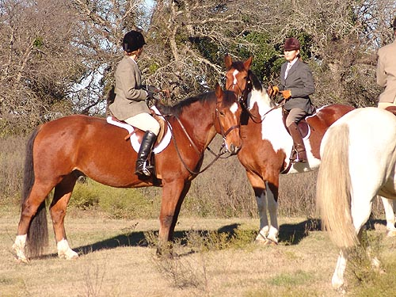
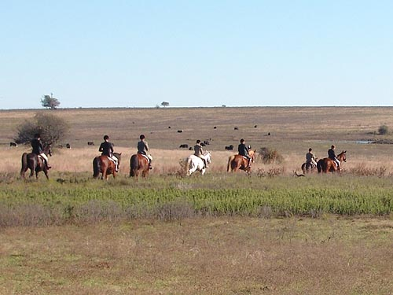
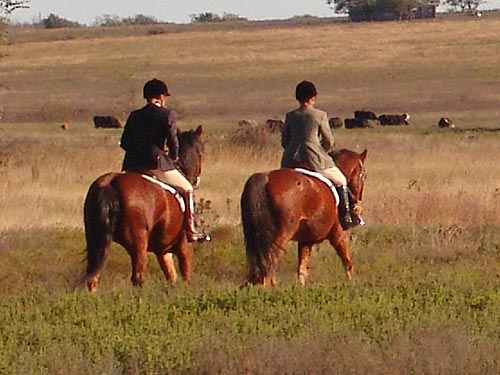
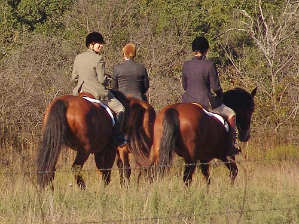
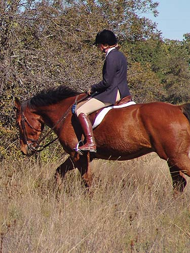
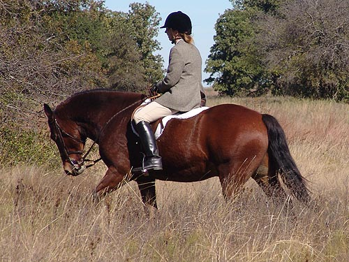
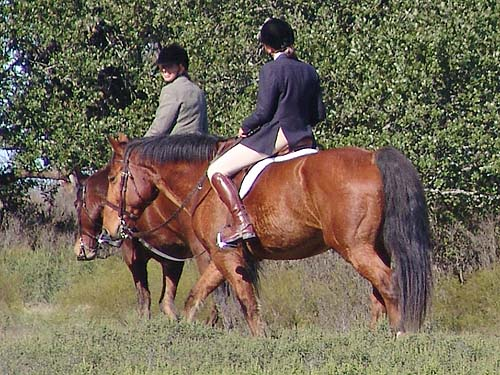

Bob's been quite a nice ride for roading
and fall hunting.
Here I am dressed up for cubbing.

Getting ready to head out. The spotted
horse is also a draft cross. Bob is great about standing around for talking....

Heading out. Bob and Thuy are the
two back bay horses. I still haven't ridden Thuy out hunting this season.
He's so steady that I've been lending him out to other riders.

Thuy, on the left, looks a touch wider
than Bob.

Gabrielle and I made up First Flight.
Thuy knew his job, and Bob only got flustered once. He now understands
to rate himself behind the horse in front, and I don't even need to pull
him up when everyone else slows down. he does it for me.

Gabrielle and I switched out coming
in. Here she's on Bob, and....

I'm up on Thuy. Such a big difference
in feel. Thuy feels like a couch and Bob has power behind every step.

They were happy to stay by each other
the entire ride.